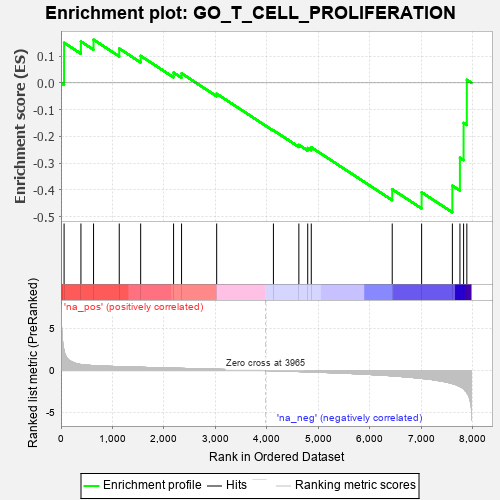
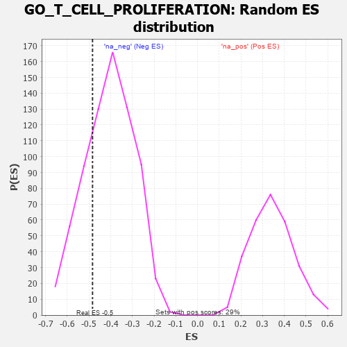

| | | Dataset | 7d |
| Phenotype | NoPhenotypeAvailable |
| Upregulated in class | na_neg |
| GeneSet | GO_T_CELL_PROLIFERATION |
| Enrichment Score (ES) | -0.4836867 |
| Normalized Enrichment Score (NES) | -1.196793 |
| Nominal p-value | 0.24475524 |
| FDR q-value | 0.6407205 |
| FWER p-Value | 1.0 |
Table: GSEA Results Summary

Fig 1: Enrichment plot: GO_T_CELL_PROLIFERATION
Profile of the Running ES Score & Positions of GeneSet Members on the Rank Ordered List
| PROBE | GENE SYMBOL | GENE_TITLE | RANK IN GENE LIST | RANK METRIC SCORE | RUNNING ES | CORE ENRICHMENT | | 1 | RAC2 | | | 60 | 2.442 | 0.1497 | No |
| 2 | BAX | | | 387 | 0.711 | 0.1545 | No |
| 3 | GLMN | | | 632 | 0.583 | 0.1613 | No |
| 4 | NCK2 | | | 1131 | 0.458 | 0.1282 | No |
| 5 | SOS1 | | | 1547 | 0.384 | 0.1007 | No |
| 6 | SYK | | | 2186 | 0.278 | 0.0384 | No |
| 7 | DOCK8 | | | 2341 | 0.254 | 0.0354 | No |
| 8 | WNT4 | | | 3023 | 0.146 | -0.0408 | No |
| 9 | ABL1 | | | 4125 | -0.027 | -0.1775 | No |
| 10 | DLG5 | | | 4619 | -0.121 | -0.2317 | No |
| 11 | CD151 | | | 4791 | -0.156 | -0.2432 | No |
| 12 | DLG1 | | | 4860 | -0.169 | -0.2408 | No |
| 13 | MALT1 | | | 6432 | -0.634 | -0.3975 | No |
| 14 | CCR2 | | | 7003 | -0.939 | -0.4088 | Yes |
| 15 | ELF4 | | | 7600 | -1.551 | -0.3838 | Yes |
| 16 | CASP3 | | | 7747 | -1.902 | -0.2797 | Yes |
| 17 | TRAF6 | | | 7818 | -2.157 | -0.1497 | Yes |
| 18 | FYN | | | 7881 | -2.622 | 0.0113 | Yes |
Table: GSEA details [plain text format]

Fig 2: GO_T_CELL_PROLIFERATION: Random ES distribution
Gene set null distribution of ES for GO_T_CELL_PROLIFERATION